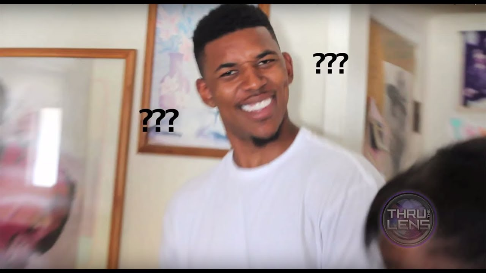

Starbucks Employee: Yes, of course you may have a straw. However, we are trying to be more sustainable by implementing this new sip lid to minimize our use of plastic straws.
Me: But isn't this lid also made of plastic?
Starbucks Employee: Yes, yes it is.
Me: Oh... Okay... Well thank you!
Starbucks Employee: You're welcome, have a great day!
Me:
